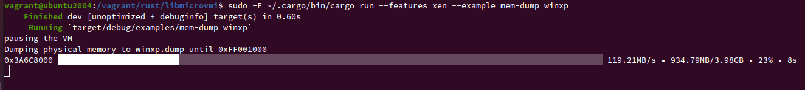

libmicrovmi
A cross-platform unified Virtual Machine Introspection API library


Table of Contents
Overview
libmicrovmi aims to provide a cross-platform unified Virtual Machine Introspection API. (See What's VMI ?)
The term micro (μ) refers to the library's simplicity as well as the letter U
standing for Unified interface.
Virtual Machine Introspection has been around since 2003, yet the ecosystem is still heavily fragmented and lacks standards as well as interoperability. (See VMI Ecosystem Fragmentation)
The main objective is to provide the simplest virtual machine introspection abstraction, offering a standard API to interact with any VMI provider, with a high degree of compatibility and composability to be integrated with any high-level VMI application.

Project Status
Below you can find a table describing the apps and drivers that can be used with libmicrovmi.
| App | Driver |
|---|---|
| API | Platform |
|---|---|
|
Legend:
- ✅: full support
- 🟧: partial support
- 🔲: TODO
Getting Started
The documentation is here to guide you, whether you are a user or developer.
User

- I would like to install libmicrovmi on my system
- I would like to know how to setup my VMI app with libmicrovmi
- I would like to know which drivers are available and how to initialize them
Developer

- I am developing a memory forensic / VM introspection app, and I want an API that supports multiple hypervisors at glance
- I want to add a new driver for libmicrovmi
Documentation
Our documentation is hosted online at
You can find it at doc/ as an mdbook 📖
To build the docs locally:
$ cargo install mdbook
$ mdbook build doc
$ xdg-open doc/book/index.html
Maintainers
License
GNU General Public License v3.0
Installation
This section details how to install the officially distributed version of libmicrovmi.
libmicrovmi is accessible through the following languages
- Rust
- C
- Python
Rust - Crates.io
The crate is available on crates.io:
Bundled drivers:
- Xen
C - Debian package
A Debian package microvmi_x.x.x_amd64.deb is available on Github releases:
It contains both the library and the headers to get started with C development
/usr/lib/libmicrovmi.so/usr/include/libmicrovmi.h
Bundled drivers:
- Xen
- KVM
- VirtualBox
- memflow
C - Windows zip archive
A zip archive microvmi_win32.zip containing a Windows release of libmicrovmi is available on Github releases:
It contains both the library and the headers to get started with C development
microvmi.dlllibmicrovmi.h
Bundled drivers:
- Virtualbox
- memflow
Python - PyPI
libmicrovmi is exposing a Python interface through a native extension.
The package microvmi is available on PyPI:
create a virtualenv and install the microvmi package
$ virtualenv -p python3 venv
(venv) $ pip install microvmi
Note: this extension is completely independant from any existing libmicrovmi.so installation on you system.
Note2: the native extension has been compiled for Linux only.
Bundled drivers:
- Xen
- KVM
- VirtualBox
- memflow
Listing Windows 10 Services using MemProcFS on QEMU (Linux)
In this tutorial we will list the running services on a Windows 10 VM running in QEMU, either fully-emulated or hardware accelerated.
Via the memflow driver, QEMU doesn't need to be modified and we can inspect its memory content to perform guest intropsection.
Requirements
- libmicrovmi installed on the system, via debian package
- Windows 10 VM running in QEMU
1 - Download the latest MemProcFS release
Download the latest MemProcFS release for Linux, and extract the archive content
2 - Install LeechCore Microvmi plugin
Compile and install the plugin:
git clone https://github.com/mtarral/LeechCore-plugins
cd LeechCore-plugins
make
cp files/leechcore_device_microvmi.so <memprocfs_extract_dir>/
3 - Mount guest memory as filesystem via MemProcFS and list services
cd <memprocfs_extract_dir>
mkdir mount # create mount directory
sudo -E ./memprocfs -mount `realpath mount` -device 'microvmi://memflow_connector_name=qemu_procfs'
At this point, you should be able to open another shell and browser mount as root.
To list the services:
cd mount
ls -l sys/services/by-name
drwxr-xr-x 2 root root 0 oct. 5 11:12 1394ohci-1
drwxr-xr-x 2 root root 0 oct. 5 11:12 3ware-2
drwxr-xr-x 2 root root 0 oct. 5 11:12 AarSvc_130f7f-615
drwxr-xr-x 2 root root 0 oct. 5 11:12 AarSvc-3
drwxr-xr-x 2 root root 0 oct. 5 11:12 ACPI-4
drwxr-xr-x 2 root root 0 oct. 5 11:12 AcpiDev-5
drwxr-xr-x 2 root root 0 oct. 5 11:12 acpiex-6
drwxr-xr-x 2 root root 0 oct. 5 11:12 acpipagr-7
drwxr-xr-x 2 root root 0 oct. 5 11:12 AcpiPmi-8
drwxr-xr-x 2 root root 0 oct. 5 11:12 acpitime-9
drwxr-xr-x 2 root root 0 oct. 5 11:12 Acx01000-10
drwxr-xr-x 2 root root 0 oct. 5 11:12 ADP80XX-11
drwxr-xr-x 2 root root 0 oct. 5 11:12 AFD-12
drwxr-xr-x 2 root root 0 oct. 5 11:12 afunix-13
drwxr-xr-x 2 root root 0 oct. 5 11:12 ahcache-14
...
Note: Use MemProcFS verbosity options to toggle debugging: -v -vv `-vvv
Note2: Use export RUST_LOG=debug to toggle libmicrovmi logging
Listing Windows 10 Processes using Volatility3 on Xen
In this tutorial, we will use the volatility3 memory forensic framework to list the processes on a running Windows 10 VM on Xen hypervisor.
Thanks to volatility3's modular architecture the libmicrovmi integration doesn't require any upstream modification. Instead we need to indicate to volatility3 how to locate our plugin.
Requirements
- libmicrovmi Python bindings in a virtualenv
venv - Xen >= 4.11
- Windows 10 VM running
1 - Install volatility3
We need the latest development version of volatility3, from git:
(venv) $ git clone https://github.com/volatilityfoundation/volatility3
(venv) $ cd volatility3
(venv) $ pip install .
2 - Locate microvmi volatility plugin directory
The microvmi python package comes with a volatility directory which contains the connection plugin.
We need to add this directory to volatility's search path.
To locate the volatility directory in your venv:
(venv) $ find venv/ -type d -wholename '*microvmi/volatility*'
venv/lib/python3.7/site-packages/microvmi/volatility
3 - Running volatility with microvmi plugin
The Microvmi volatility plugin recognizes the vmi:// URL scheme.
For Xen we need to pass the vm_name parameter.
Assuming that our Xen domain is named win10:
(venv) $ sudo -E ./venv/bin/vol \ # running volatility3 as root (required by the Xen driver)
--plugin-dirs venv/lib/python3.7/site-packages/microvmi/volatility \ # path to the microvmi connection plugin
-vvv \ # verbosity
--single-location 'vmi:///?vm_name=win10' \ # specify the resource location
windows.pslist.PsList # volatility's pslist plugin
⚠️ To debug libmicrovmi initialization: export RUST_LOG=debug
For a complete overview of the URL parameters, check the documentation
Run LibVMI fork on memflow
This tutorial will walk you through the steps to use LibVMI with memflow, via libmicrovmi, and run the vmi-win-guid example.
Requirements
- libmicrovmi installed on the system, via debian package
1 - Download LibVMI fork compatible with libmicrovmi
LibVMI needs to be modified in order to build and use libmicrovmi. This modified version is maintained by our projet and available at:
git clone https://github.com/Wenzel/libvmi -b libmicrovmi
⚠️make sure to checkout the libmicrovmi branch
2 - Install LibVMI build dependencies
sudo apt-get install cmake flex bison libglib2.0-dev libvirt-dev libjson-c-dev libyajl-dev
3 - Compile LibVMI
cd libvmi
cmake -B build -DVMI_DEBUG='(VMI_DEBUG_CORE)' . # toggling core debug output
cmake --build build
4 - Run vmi-win-guid example
vmi-win-guid is a very simple example and doesn't require any profile or prior configuration.
The following example is based on memflow, but any libmicrovmi driver can be used.
Assuming memflow connector qemu is installed and a QEMU VM is running:
sudo -E ./examples/vmi-win-guid name <vm name>
Note: memflow qemu connector requires to be root.
Note2: RUST_LOG=info or RUST_LOG=debug will give you extra info about libmicrovmi searching for available drivers.
Note3: at this point, the qemu connector is hardcoded in LibVMI, but extending the command line argument and vmi_init function should be an easy task.
Integration
This section details the available libmicrovmi integrations.
LibVMI
libmicrovmi can replace the low-level layer of LibVMI drivers:

API Compatibility Status
LibVMI driver layer could be replaced by libmicrovmi.
The API is used in the following files:
| API | Supported | Observations |
|---|---|---|
driver_init_mode() | 🟠 | |
driver_init() | 🟠 | |
driver_init_vmi() | 🟠 | |
driver_domainwatch_init() | ||
driver_destroy() | ✅ | |
driver_get_id_from_name() | ||
driver_get_name_from_id() | ||
driver_get_id_from_uuid() | ||
driver_get_id() | ||
driver_set_id() | ||
driver_check_id() | ||
driver_get_name() | ||
driver_set_name() | ||
driver_get_xsave_info() | ||
driver_get_memsize() | ||
driver_request_page_fault() | ||
driver_get_tsc_info() | ||
driver_get_vcpumtrr() | ||
driver_get_vcpureg() | ✅ | |
driver_get_vcpuregs() | ||
driver_set_vcpureg() | ||
driver_set_vcpuregs() | ||
driver_mmap_guest() | ||
driver_write() | ||
driver_is_pv() | ||
driver_pause_vm() | ✅ | |
driver_resume_vm() | ✅ | |
driver_events_listen() | ||
driver_are_events_pending() | ||
driver_set_reg_access() | ||
driver_set_intr_access() | ||
driver_set_mem_access() | ||
driver_start_single_step() | ||
driver_stop_single_step() | ||
driver_shutdown_single_step() | ||
driver_set_guest_requested() | ||
driver_set_cpuid_event() | ||
driver_set_debug_event() | ||
driver_set_privcall_event() | ||
driver_set_desc_access_event() | ||
driver_set_failed_emulation_event() | ||
driver_set_domain_watch_event() | ||
driver_slat_get_domain_state() | ||
driver_slat_set_domain_state() | ||
driver_slat_create() | ||
driver_slat_destroy() | ||
driver_slat_switch() | ||
driver_slat_change_gfn() | ||
driver_set_access_required() | ||
get_data() | ✅ | |
release_data() | ✅ |
volatility3
volatility3 is a framework for extracting digital artifacts and performing forensic investigation on RAM samples.
Combined with libmicrovmi, you can run volatility3 on top of a live virtual machine's physical memory.
Thanks to volatility3's modular architecture the libmicrovmi integration doesn't require any upstream modification. Instead we need to indicate to volatility3 how to locate our plugin.
Plugin path
(venv) $ find venv/ -type d -wholename '*microvmi/volatility*'
venv/lib/python3.7/site-packages/microvmi/volatility
VMI scheme URL
The libmicrovmi handler for volatility is a URL handler with the following syntax:
vmi://[hypervisor]/?param1=value1...
The hypervisor part is optional. If not specified, it will default to try every builtin driver available.
Additional driver parameters can be specified.
To pass the VM name:
vmi:///?vm_name=windows10
To pass the KVMi socket:
vmi:///?vm_name=windows10&kvm_unix_socket=/tmp/introspector
URL parameters:
| name | description |
|---|---|
vm_name | Name of the VM |
kvm_unix_socket | KVMi UNIX socket |
memflow_connector_name | memflow connector name |
Running volatility3
To run volatility3 combined with libmicrovmi:
-p <plugin_dir>--single-location vmi://...url
LeechCore
LeechCore is a physical memory acquisition library compatible with a great variety of software and hardware sources.
It can be extended using LeechCore-plugins plugin interface.
A "microvmi" plugin has been developed to integrate libmicrovmi in LeechCore, exposing the physical memory of virtual machines supported by libmicrovmi.
The main use case is to mount the VM's physical memory as a high-level filesystem via MemProcFS
The documentation regarding the microvmi LeechCore device is available on the LeechCore-plugins's README
Development
Drivers
Each driver is optional, and requires an explicit compilation feature flag to be enabled.
cargo build --features driverA,driverB,driverC
In this section you will find a description of each driver available, it's dependencies and initialization parameters.
Xen
Requirements
- Xen >= 4.11
- root privileges
- Platform: Linux
Initialization parameters
vm_name: required
KVM
Requirements
- QEMU and KVM needs to be modified: KVM-VMI setup
- Platform: Linux
Initialization parameters
vm_name: requiredkvm_unix_socket: required
VirtualBox
Requirements
- virtualbox modified via icebox project
- Platform: Windows/Linux
To compile libFDP
$ git clone --depth 1 https://github.com/thalium/icebox
$ cd icebox/src/FDP
$ g++ -std=c++11 -shared -fPIC FDP.cpp -o libFDP.so
$ sudo mv include/* /usr/local/include/
$ sudo mv libFDP.so /usr/local/lib/
Initialization parameters
vm_name: required
memflow
memflow is a live memory introspection framework with a modular architecture.
It has multiple connectors which can be used to access physical memory:
- qemu: access QEMU physical memory
- kvm
- pcileech: access pcileech interface
- coredump: access Microsoft Windows Coredump files
Requirements
- memflow connector project setup
- root privileges
- Platform: Windows/Linux
Initialization parameters
memflow_connector_name: requiredmemflow_connector_args: optionalvm_name: optional, will be used ifmemflow_connector_name=qemu
API
In this section the libmicrovmi API is detailed for Rust, C and Python
Rust API

Python API
Initializing libmicrovmi
from microvmi import Microvmi, DriverInitParamsPy, CommonInitParamsPy
# setup common params
common = CommonInitParamsPy()
common.vm_name = "windows10"
# setup main init_params
init_params = DriverInitParamsPy()
init_params.common = common
micro = Microvmi(None, init_params)
Specifying the hypervisor
from microvmi import Microvmi, DriverType, DriverInitParamsPy, CommonInitParamsPy
# setup common params
common = CommonInitParamsPy()
common.vm_name = "windows10"
# setup main init_params
init_params = DriverInitParamsPy()
init_params.common = common
micro = Microvmi(DriverType.XEN, init_params)
Adding driver initialization parameters
from microvmi import Microvmi, DriverInitParamsPy, CommonInitParamsPy, KVMInitParamsPy
# setup common params
common = CommonInitParamsPy()
common.vm_name = "windows10"
# setup kvm params
kvm = KVMInitParamsPy()
kvm.unix_socket = "/tmp/introspector"
# setup main init_params
init_params = DriverInitParamsPy()
init_params.common = common
init_params.kvm = kvm
micro = Microvmi(DriverType.KVM, init_params)
C API
The C API can be generated by building the project
cargo build
And look at ./target/debug/capi/libmicrovmi.h header.
VMI API
This section describes what can be done with a virtual machine introspection API
- Query and modify the VM hardware state
- read/write VCPU registers
- read/write physical memory
- Subscribe and listen to hardware events
- mov to/from CR3/CR8
- mov to/from DRx
- mov to/from MSR
- interrupts
- singlestep (MTF)
- hypercalls
- descriptors
- SLAT (Second Level Address Translation) events
r/w/xevent on a page- dynamically switch to multiple memory views using alternate SLAT pointers
- Intel Processor Trace packets
- Utilities
- foreign mapping
- pagefault injection
Xen
VMI APIs are available upstream since Xen 4.1
-
Accessing the VM's hardware state
- get number of VCPUs: ✅
- get maximum gfn: ✅
- pause/resume: ✅
- r/w physical memory: ✅
- r/w virtual memory: ✅
- r/w VCPU registers: ✅
-
Intercept VM's hardware events
- control registers: ✅
- extended control registers: ✅
- debug registers: ✅
- MSR: ✅
- singlesteps: ✅
- interrupts: ✅
- descriptors: ✅
- hypercalls: ✅
- CPUID: ✅
- memory: ✅
- alternate SLAT: ✅
-
Utilities:
- foreign mapping: ✅
- exception injection: ✅
KVM
VMI APIs are currently being developed by BitDefender, and in review on the mailing list.
-
Accessing the VM's hardware state
- get number of VCPUs: ✅
- get maximum gfn: ❌
- pause/resume: ✅
- r/w physical memory: ✅
- r/w virtual memory: ❌
- r/w VCPU registers: ✅
-
Intercept VM's hardware events
- control registers: ✅
- extended control registers: ❌
- debug registers: ✅
- MSR: ✅
- singlesteps: ❌
- interrupts: ✅
- descriptors: ✅
- hypercalls: ✅
- CPUID: ❌
- memory: ✅
- alternate SLAT: ❌
-
Utilities:
- foreign mapping: ✅
- exception injection: ✅
Note:
SLAT: Second Level Address Translation
VMI Fragmentation
Virtual Machine Introspection has been around since 2003, yet the ecosystem is still heavily fragmented and lacks standards as well as interoperability.
See our talk at FOSDEM 2020: Rustifying the Virtual Machine Introspection ecosystem.
Debugging
Live Memory Forensics
Dynamic Analysis
Cloud Monitoring
Fuzzing
Libraries
libmicrovmi
Requirements
- clang: to generate rust bindings
$ sudo apt install clang libxen-dev
Compiling the crate
Compiling the crate without any driver:
cargo build
Enabling drivers
Enabling Xen and KVM drivers:
cargo build --features xen,kvm
Please look at the drivers section for each driver's requirements.
Running the examples
Specifing no example will list all available examples:
cargo run --example
To run the mem-dump example, and include the Xen driver:
cargo run --features xen --example mem-dump
To pass arbitrary arguments to an example:
cargo run --example mem-dump -- --help
cargo run --features kvm --example mem-dump -- --vm_name win10 ----kvm_unix_socket /tmp/introspector
Compilation from Source
This sections details how to compile libmicrovmi from source.
You might want to dive into it if you are interested by:
- compiling a specific driver that is not available by default in the officially distributed version
- developing libmicrovmi
- add a new driver
- extend the APIs
We assume that you have a working Cargo stable toolchain.
⚠️ Note: each driver depends on development headers to be install in order to generate the bindings from C to Rust.
For any driver, clang is a required dependency:
$ sudo apt-get install clang
Please look at the driver reference section of the documentation.
Cloning libmicrovmi
Clone the repo:
$ git clone https://github.com/Wenzel/libmicrovmi
Rust
Compilation for a Rust crate is as simple as using cargo:
$ cargo build --features xen,kvm
C
The C library is generated by default when building the microvmi crate.
The output files will be located at:
target/<debug|release>/libmicrovmi.so : the C library
target/<debug|release>/capi/libmicrovmi.h : the development header
Python
To build the native Python extension, create a virtualenv and run ./setup.py:
$ cd libmicrovmi/python
$ python3 -m venv venv
$ source venv/bin/activate
(venv) $ python -m pip install --upgrade setuptools
(venv) $ python -m pip install -r requirements.txt
(venv) $ ./setup.py install --features xen,kvm
Note:
./setup.py install: will create a release build./setup.py develop: will create a debug buildpip install .is NOT available due a to an issue in setuptools-rust/Maturin. Do not usepip.
Introduction
This tutorial will walk you through the steps required to compile libmicrovmi and run
the mem-dump Rust example code on a Xen domain in order to dump its physical memory.
This tutorial assumes the following:
- you have a working installation of Rust as well as a Xen domain
- you have a running VM supervised by Xen 4.11.0 or above.
- you are running on Ubuntu 20.04
Requirements
clang(bindgen)- Xen development headers
To install the additional dependencies:
$ sudo apt install clang libxen-dev
Cloning libmicrovmi
Before beginning the tutorial, clone the repo:
$ git clone https://github.com/Wenzel/libmicrovmi
⚠️ Note: Accessing Xen's introspection APIs will require high privileges as we are talking to Dom0,
hence we have to run cargo as root when actually running and testing example code.
Memory-dump example in Rust
In this tutorial chapter, we will run the mem-dump.rs Rust example code
to dump the physical memory of a domain.
First, we will compile libmicrovmi with the Xen driver enabled:
$ cd libmicrovmi
$ cargo build --features xen
Running the example
Next, let's run the example on your domain <vm_name>:
$ sudo -E ~/.cargo/bin/cargo run --features xen --example mem-dump <vm_name>
Expected output:

Toggle debug output
In case an error would arise, the logging output can be toggled with RUST_LOG env var
and offer more detailed information:
$ export RUST_LOG=debug
$ sudo -E ~/.cargo/bin/cargo run --features xen --example mem-dump <vm_name>
Memory-dump example in C
In this tutorial chapter, we will run the mem-dump.c C example code
to dump the physical memory of a domain.
First, we will compile libmicrovmi with the Xen driver enabled:
$ cd libmicrovmi
$ cargo build --features xen
Install cbindgen
cbindgen is a tool for automatically generating C header files that expose
a Rust library's FFI.
To install it:
$ cargo install --force cbindgen
Building mem-dump C example
$ cd c_examples/
$ cmake -B build .
$ cmake --build build --target mem-dump
Running the example
Next, let's run the example on your domain <vm_name>:
cd build
$ sudo LD_LIBRARY_PATH="$LD_LIBRARY_PATH:../target/debug" ./mem-dump <vm_name>
⚠️ Note: libmicrovmi.so has been generated by cargo into target/debug.
We have to set LD_LIBRARY_PATH so that mem-dump is able to find the libary.
Expected output:

Memory-dump example in Rust
In this tutorial chapter, we will run the mem-dump.py Python example to dump
the physical memory of a domain, thanks to libmicrovmi Python bindings.
First, let's create a virtualenv and install the bindings with the Xen driver enabled:
$ cd libmicrovmi/python
$ python3 -m venv venv
$ source venv/bin/activate
(venv) $ python -m pip install --upgrade setuptools
(venv) $ python -m pip install -r requirements.txt
(venv) $ ./setup.py install --features xen
Running the example
The examples/mem-dump.py script is based on the rich library for an enhanced output.
As they are only needed for example code, the requirements are kept in a separate file.
Let's install them:
cd libmicrovmi/python
(venv) $ python -m pip install -r examples/requirements.txt
Now you can run the example on your domain <vm_name>:
$ sudo -E ./venv/bin/python examples/mem-dump.py <vm_name>
Expected output:

Python Bindings
Nox
The project uses Nox to facilite and automate the developer workflow. Please install this tool before you start
Running nox without any argument will run the default sessions.
Generating the Wheels
Distributing a Python native extension compatible with many systems and a large set of Python interpreters is a challenging task.
The manylinux project comes to the rescue here.
The extension is built based on the manylinux2014 platform tag.
Generation of the wheels is managed by nox and requires Docker to build a custom manylinux2014 CentOS image, and
execute the script inside it.
To start the generation:
$ cd libmicrovmi/python
$ nox -r -s generate_wheels -- --features xen
you can activate more drivers
$ nox -r -s generate_wheels -- --features xen,kvm,virtualbox
and enable the release mode as well
nox -r -s generate_wheels -- --features xen --release
After the execution, the wheels will be available in libmicrovmi/python/dist/manylinux.
Testing Volatility
Nox provides sessions to facilitate testing the volatility integration on a given driver.
For Xen:
nox -r -s test_volatility_xen -- vmi:///....
To list nox sessions:
nox -l
Integration tests
Instructions for all tests:
- Update the values in
tests/common/config.rsaccording to your environment cargo test -- --nocapture: displays thelogoutput, useful for debugging
KVM
Requirements
- virtual machine already configured to be introspected by KVM-VMI
- VM snapshot with live state
- libkvmi
virshtool: (libvirt-clientspackage)
The VM state between each test is handled by the following commands:
- setup:
virsh snapshot-revert <vm_name> --current --running - teardown:
virsh destroy <vm_name>
Execution
cargo test --feature kvm
Release Management
libmicrovmi project release is handled in the CI, on Github Actions.
If a commit is pushed with a tag matching v*, the release job of the CI is executed,
as well as all jobs depending on it.
Release CI related jobs
release: create a Github releaserelease_debian: add a Debian package to the Github releaserelease_book: build and publish the bookpublish: publish the crate on crates.iopublis_pypi: publish the Python bindings on PyPI
How to make a new release
Release and tags are managed using the cargo-release tool.
$ cargo release --no-dev-version --workspace --skip-push --execute <major/minor/patch>
We skip-push the commit because there is a bug in cargo-release when working with a workspace.
amend the commit with the right tag
$ git commit --amend
edit with vxxxx
$ git push origin master
$ git push origin vxxxx
Note: cargo-release can handle the publication on crates.io, but we prefer to manage everything in one place, using the CI.
Therefore, publishing has been explicitely disabled in Cargo.toml for this tool, so no mistakes can happen.